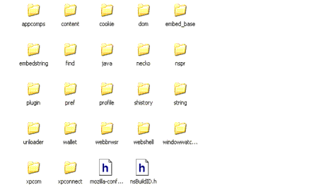
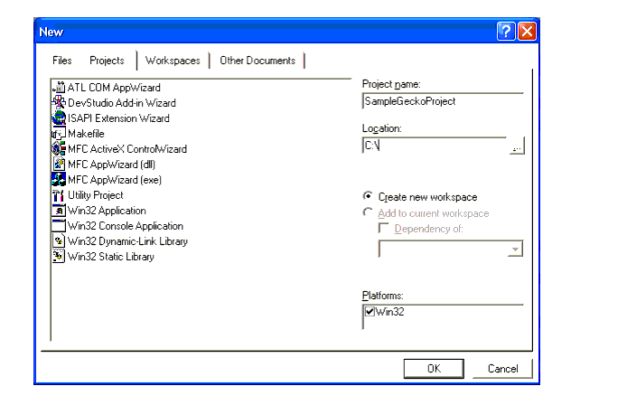
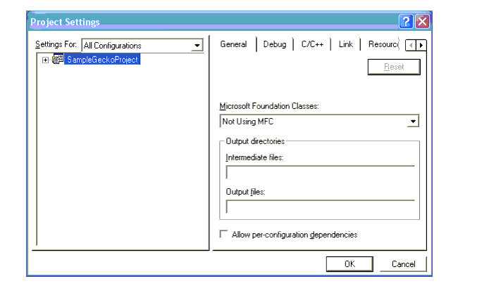
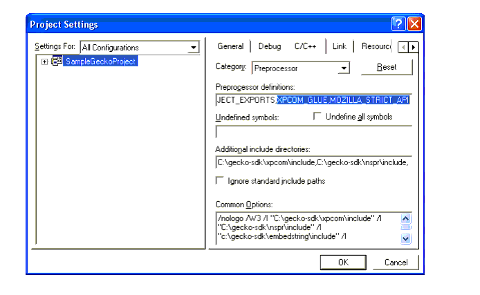
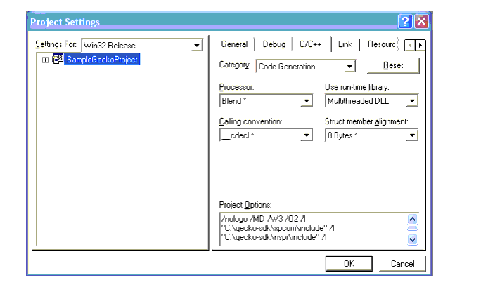

Appendix A: Setting up
the Gecko SDK
This chapter provides basic setup information for the Gecko Software Development Kit (SDK) used to build the WebLock component in this tutorial. The following four sections tell the developer how to download and organize the Gecko SDK and create a new project in which components like WebLock can be created:
Downloading and Setting the SDK
The Gecko SDK provides all of the tools, headers, and libraries that you need to build XPCOM Components. The SDK is available for Windows and Linux operating systems, and versions for other operating systems are being developed, and can be retrieved from as a single archive from the following platform-specific locations:
- Linux: http://ftp.mozilla.org/pub/mozilla/releases/mozilla1.4a/gecko-sdk-i686-pc-linux-gnu-1.4a.tar.gz
- Windows: http://ftp.mozilla.org/pub/mozilla/releases/mozilla1.4a/gecko-sdk-win32-1.4a.zip
Note that the version number for the archives above is 1.4a. The WebLock component was built with this version, but you can always check for newer versions at http://ftp.mozilla.org/pub/mozilla/releases/.
Once you download the SDK, you can expand it into any convenient location. In this appendix, we set up the Windows Gecko SDK in c:\gecko-sdk. If you choose some other location, remember to adjust the settings described here (e.g., in the "Building a Microsoft Visual C++ Project" section below) to point to this new location.
When you extract the SDK, it should have the layout seen in Figure 1.

Figure 1. Layout of the Extracted SDKThe directories represent different modules in the SDK. For example, the headers for networking are all located in the "necko" directory, and the headers that XPCOM requires are in the XPCOM directory. This directory structure makes build scripts slightly more complicated (since there will be many different include paths), but it helps to organize the parts of the SDK meaningfully.
The two top level header files are special. The file mozilla-config.h lists all of the defines used in the SDK. Including this header file in your project ensures that the component you create uses the same defines as the Gecko libraries themselves. Note that mozilla-config.h may be need to be included before other includes in your component's source code.
Each module directory is divided into three subdirectories:
Figure 2. Module SubdirectoriesThe bin directory contains static libraries, dynamic libraries, and in some cases tools that may be useful in development. The idl directory contains the public IDL files exported by the module. The includes directory contains C++ header files used by your component.
XPCOM exports a number of binaries that should be mentioned at this point. The table below refers to the Windows file names for the executables.
Library Name Description of functionality xpcomglue.lib XPCOM Glue library to be used by xpcom components.
Building a Microsoft Visual C++ Project
Once you setup the Gecko SDK, you can create a Microsoft Visual C++ project to handle component development with the SDK.
Creating a New Project
After launching Visual C++, select New from the File menu. Then, from the New dialog, select "Win32 Dynamic-Link Library. Use the fields to the right of the dialog to name your project and set its location (This example uses "SampleGeckoProject" as the Project name and C:\ as its location.).

Figure 3. New DialogSelect OK. In the Win32 Dynamic-Link Library dialog that displays (see Figure 4), you can choose the default selection "An Empty DLL Project" as the type of DLL.

Figure 4. Win32 Dynamic-Link Library DialogIn this dialog, click Finish. Microsoft Studio creates a new project per your specification and presents you with the standard Project view.
Adding the Gecko SDK to the Project Settings
In order to build anything that uses Gecko, you have to further modify the project so that it knows where to find the Gecko SDK on the disk. To edit project settings, select Settings from the Project menu (or press Alt-F7).
Most of the changes you make in the following steps apply to all configurations of the project (both Debug and Optimized), so select "All Configurations" from the Settings For dropdown menu (see Figure 5).

Figure 5. Project Settings DialogOn the C/C++ tab, select the Preprocessor category. This window is where you add the include paths to the Gecko SDK as well as two preprocessor defines:
At a minimum, you must include the nspr, the embedstring and string include directories, and to the xpcom include subdirectories. If your component will use other parts of the SDK (e.g., necko), you will have to add these include directories to this field as well.
These paths are the following:
- c:\gecko-sdk\embedstring\include
- c:\gecko-sdk\xpcom\include
- c:\gecko-sdk\nspr\include
- c:\gecko-sdk\string\include

Figure 6. Adding Includes to the ProjectUnder the C++ language category, disable exception handling. As described in the section ""Exceptions" in XPCOM" on page 17, exception handling isn't supported across interface boundaries, so setting this option may catch problems during development.
The WebLock component needs to link against the appropriate libaries to uses XPCOM Glue. To add these libraries, select the Link tab, then choose the Input category. In this panel, instead of linking to the include subdirectories to the nspr, embedstring, and xpcom directories, add the paths to the bin subdirectories.
We also link against a number of libraries in the Object/library modules line:
Both of these settings are shown in Figure 7.

Figure 7. Bin and Library SettingsThe last change you need to make to set up the Gecko SDK in your project is to change the "Use run-time library" setting to "Multithreaded DLL." Since this change is configuration dependent, you must make set the Release configuration run-time library to the release multithreaded dll runtime and the Debug configuration to the debug multithreaded dll runtime (see Figure 8).

Figure 8. Run-time Library SettingsAfter making these changes, press OK. This finalizes the project settings and gives you a project that will hold and compile XPCOM Components.
A Makefile for Unix
On Linux, the equivalent project settings are typically handled in a Makefile. The Makefile allows you to specify any number of options for your build environment, including the path and configuration updates you need to build with the Gecko SDK.
Figure 9 is a listing for a Makefile that configures your compiler to work with the SDK. Explaining the details of the Makefile is outside the scope of this appendix, but it modifies the same properties that are configured in the Visual C++ project (see "Building a Microsoft Visual C++ Project"). For a listing of the commands that appear in this listing, see the Make manual: http://www.gnu.org/manual/make/.
Figure 9. Sample Makefile for the Gecko SDK
| Copyright (c) 2003 by Doug Turner and Ian Oeschger. This material may be distributed only subject to the terms and conditions set forth in the Open Publication License, v1.02 or later. Distribution of substantively modified versions of this document is prohibited without the explicit permission of the copyright holder. Distribution of the work or derivative of the work in any standard (paper) book form is prohibited unless prior permission is obtained from the copyright holder. |